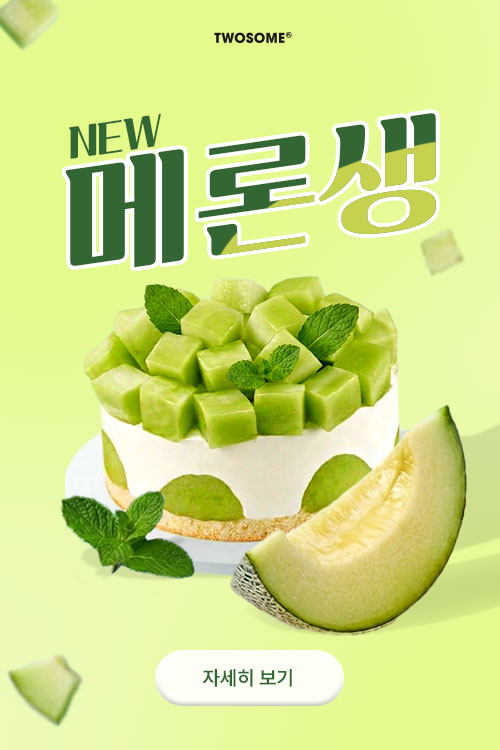
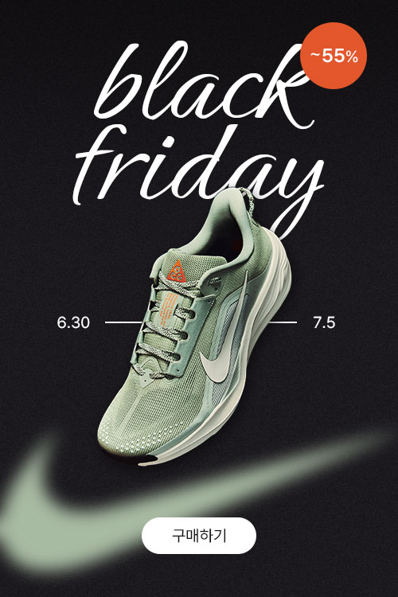
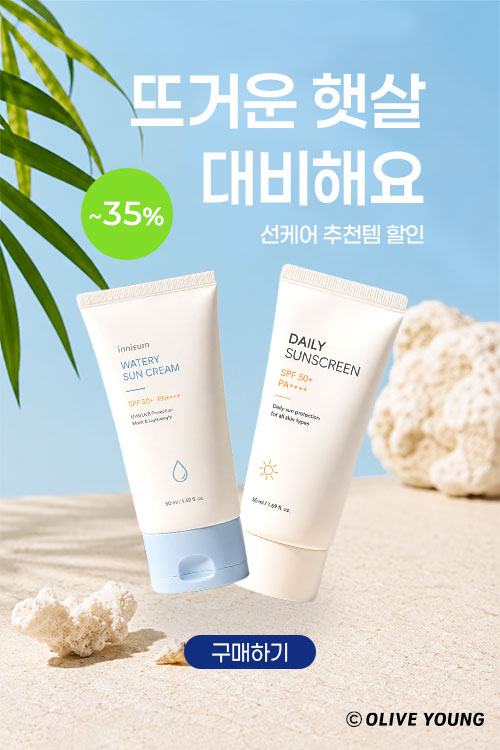
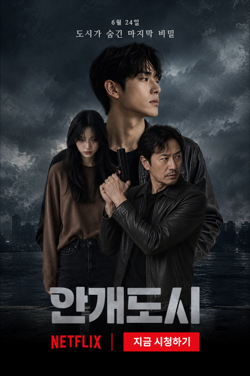
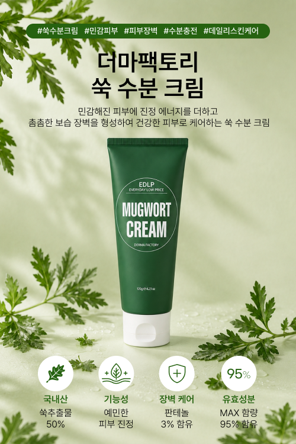
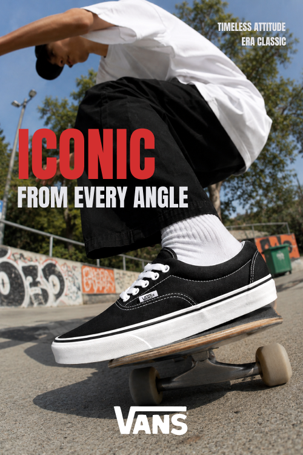
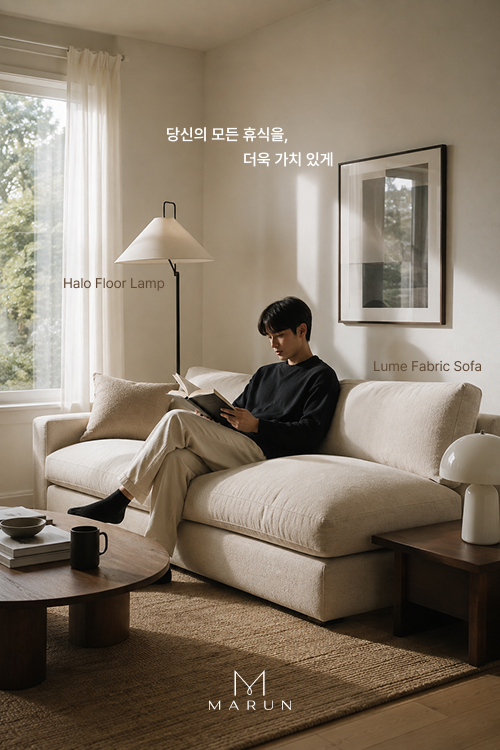
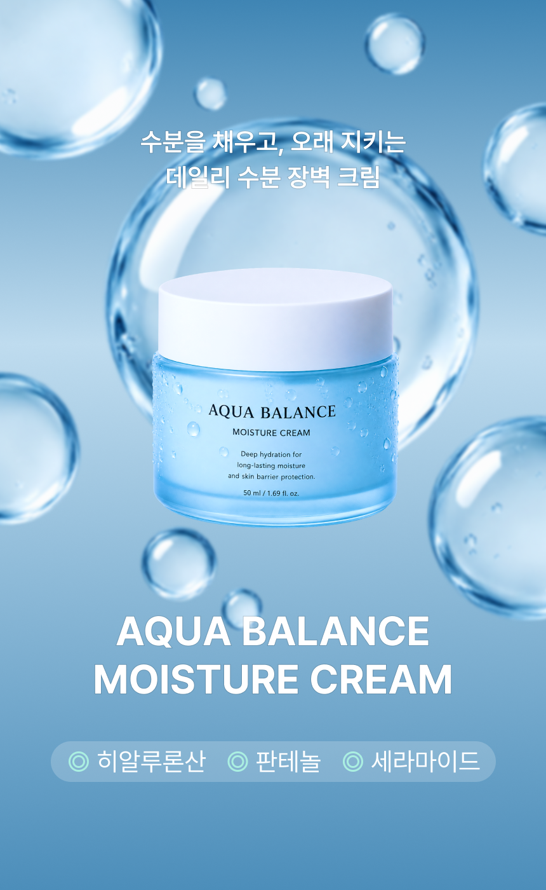

KIEHL’S 리디자인
키엘(Kiehl’s)의 제품과 브랜드 이미지를 효과적으로 전달하기 위한 웹사이트 리디자인 프로젝트입니다. 정보 밀도가 높고, 브랜드 감성을 전달하는 통일감이 부족했던 기존 사이트를 절제된 타이포그래피와 여백을 활용하고 제품과 제형이 돋보이는 비주얼로 다시 구성해 보았습니다.
Precise
in execution.
사용자를 이해하고,
의도에 맞게 구현합니다.
직관적이고 사용자 친화적인 디자인을 추구하는 디자이너 · 퍼블리셔입니다. 디자인부터 퍼블리싱까지 웹 페이지 컨텐츠 제작과 UI/UX 디자인, 구현의 전반적인 과정을 다양한 도구를 활용하여 수행할 수 있습니다.
디자인과 퍼블리싱에 필요한 도구를 능숙하게 활용합니다.
시맨틱 태그를 활용해 콘텐츠의 의미와 구조에 맞는 페이지를 구성할 수 있습니다. 링크, 목록, 입력 폼을 마크업하고, 대체 텍스트와 폼 레이블을 작성해 기본적인 웹 접근성을 고려할 수 있습니다.
Flex와 Grid를 활용해 레이아웃을 구성하고, 미디어 쿼리로 다양한 화면 크기에 대응하는 반응형 페이지를 제작할 수 있습니다. 가상 요소와 transition, animation을 활용해 시각적 효과와 움직임을 구현할 수 있습니다.
DOM과 이벤트를 활용해 사용자의 행동에 반응하는 기능을 구현할 수 있습니다. 탭, 아코디언, 팝업, 모바일 메뉴를 제작하고, Swiper를 활용해 슬라이드와 페이지네이션을 구성할 수 있습니다.
와이어프레임부터 상세 디자인까지 화면을 설계할 수 있습니다. Auto Layout과 컴포넌트, Variant로 일관된 UI를 구성하고, 프로토타입을 활용해 화면 이동과 인터랙션을 표현할 수 있습니다.
배경 제거, 색상 보정, 합성, 리터칭으로 이미지를 목적에 맞게 편집할 수 있습니다. 레이어와 마스크를 활용해 팝업, 배너, 포스터, 상세페이지를 제작하고, 웹에 적합한 크기와 형식으로 저장할 수 있습니다.
펜 도구와 패스파인더를 활용해 로고, 아이콘, 간단한 일러스트를 제작하고 수정할 수 있습니다. 도형과 타이포그래피를 조합해 벡터 그래픽을 구성하고, SVG 등 용도에 맞는 형식으로 내보낼 수 있습니다.
커밋으로 작업 이력을 기록하고, 브랜치를 나누어 변경 사항을 관리할 수 있습니다. 원격 저장소에 코드를 공유하고, Pull Request를 활용해 팀원과 변경 내용을 검토하며 협업할 수 있습니다.
디자인 콘셉트에 맞는 이미지를 생성하고, 배경 제거와 이미지 수정으로 필요한 시각 자료를 제작할 수 있습니다. HTML·CSS·JavaScript 코드의 초안 작성과 오류 원인 파악에 활용하고, 제안된 코드를 검토·수정해 작업에 적용할 수 있습니다.
01
기획과 UI/UX 디자인부터 퍼블리싱까지 실제 제작과정을 경험하며 만든 웹사이트 프로젝트를 소개합니다.
02
짧은 순간에도 핵심 메시지가 전달되도록 디자인한 팝업 작업입니다. 이벤트와 프로모션의 성격에 맞춰 색상과 이미지를 구성하고, 명확한 정보 배치로 사용자의 관심과 참여를 유도했습니다.

밝은 연두색 배경과 짙은 녹색 타이포그래피로 메론의 신선함을 표현했습니다.
기울어진 타이포그래피와 화면 곳곳의 메론 조각으로 경쾌한 분위기를 더하고, 과일과 케이크를 겹쳐 배치해 입체감을 살렸습니다.

운동화를 중심으로 할인 혜택을 전달하는 블랙프라이데이 팝업 디자인입니다.
검은색 배경과 흰색 타이포그래피를 사용해 주요 정보에 시각적 대비를 만들었습니다. 브랜드 로고와 할인 혜택을 강조한 뱃지에는 운동화의 색을 적용해 포인트를 주었습니다.
중앙에는 제품 이미지를 비스듬히 배치해 역동적인 분위기를 연출했습니다.

하늘색 배경에 모래사장과 야자수 잎을 조합해 시원한 여름 휴양지의 분위기를 연출했습니다. 서체는 둥근 고딕 형태의 페이퍼로지를 사용해 가벼운 느낌을 더했습니다.
두 제품을 서로 다른 각도로 배치하고 그림자를 더해 입체감을 살렸습니다. 밝은 그린 색상의 원형 배지로 할인 혜택을 강조했습니다.

스릴러 콘텐츠를 홍보하는 팝업 디자인입니다. 짙은 회색의 구름과 어두운 도시 배경으로 미스터리한 분위기를 조성했습니다. 세 인물을 크기와 위치에 차이를 두어 배치해 인물 간의 긴장감을 표현하고 이야기의 궁금증을 더했습니다.
제목에는 클리핑 마스크를 사용해 안개의 질감을 넣었습니다. 전체적인 이미지의 낮은 채도와 대비되는 빨간 버튼을 배치해 시청을 유도했습니다.
03
주제의 분위기와 메시지를 시각적으로 표현한 포스터 작업입니다. 이미지와 타이포그래피의 조화를 통해 시선을 끌고, 정보의 중요도에 따라 크기와 배치를 조정해 내용을 명확하게 전달했습니다.

쑥 수분 크림의 성분과 특징을 소개하는 제품 홍보 포스터입니다. 연녹색 배경에 쑥 잎과 물방울을 배치해 자연 유래 성분과 촉촉한 사용감을 시각적으로 표현했습니다.
상단에는 해시태그와 제품명을, 하단에는 아이콘과 간단한 설명을 적어 핵심 정보를 쉽게 파악할 수 있도록 했습니다.

클래식한 스타일과 자유로운 스트리트 감성을 표현한 브랜드 포스터입니다. 낮은 시점에서 촬영한 스케이트보드 장면을 화면 가득 배치해 역동성을 살리고 신발을 크게 부각해 제품에 시선이 집중되도록 구성했습니다.
수직적인 인상에 어울리는 압축된 타이포그래피를 사용했고, 주변과 대비되는 빨간 글씨로 브랜드의 특징을 강조했습니다.

가구 브랜드가 추구하는 따뜻하고 차분한 라이프스타일을 표현했습니다. 자연광이 비치는 거실과 소파에서 책을 읽는 인물을 통해 가구가 일상의 휴식에 자연스럽게 어우러지는 모습을 담았습니다.
장식 요소를 최소화하고 하단에 브랜드 로고를 배치해 여백과 이미지 중심의 절제된 디자인을 완성했습니다.
04
제한된 공간 안에서 핵심 정보를 효과적으로 전달하는 배너 작업입니다. 브랜드와 콘텐츠의 성격에 맞춰 이미지와 문구를 구성하고, 간결한 레이아웃으로 사용자의 시선과 클릭을 유도했습니다.

설명
설명
설명
설명

설명
설명
설명
설명
05
상품의 특징과 매력을 체계적으로 전달하는 상세 페이지 작업입니다. 사용자의 시선 흐름에 맞춰 이미지와 정보를 배치하고, 주요 장점이 자연스럽게 드러나도록 구성해 상품에 대한 이해와 구매 결정을 돕고자 했습니다.

아쿠아 밸런스 수분크림의 촉촉하고 산뜻한 이미지를 블루 컬러와 투명한 물방울로 표현한 상세페이지입니다. 주요 성분과 보습 효과를 아이콘과 그래프로 시각화하고, 사용감과 케어 루틴까지 자연스럽게 이어지도록 구성했습니다.
설명
설명
설명
설명

설명
설명
설명
설명